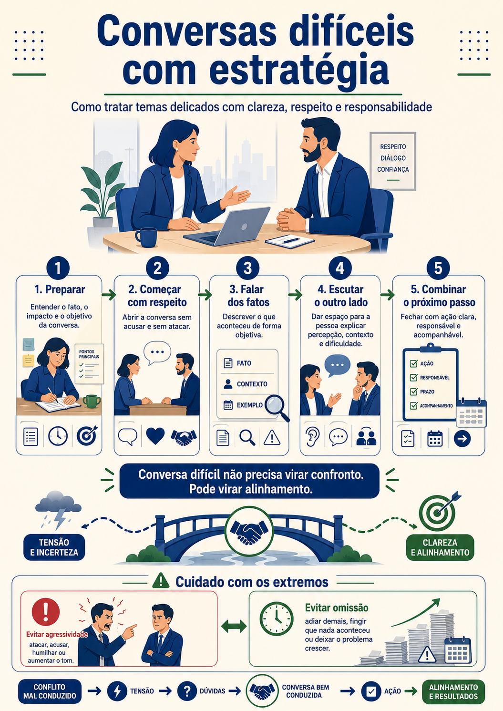
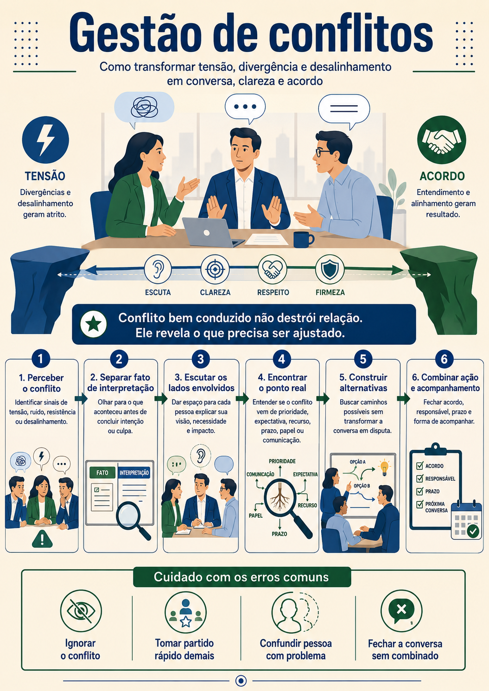
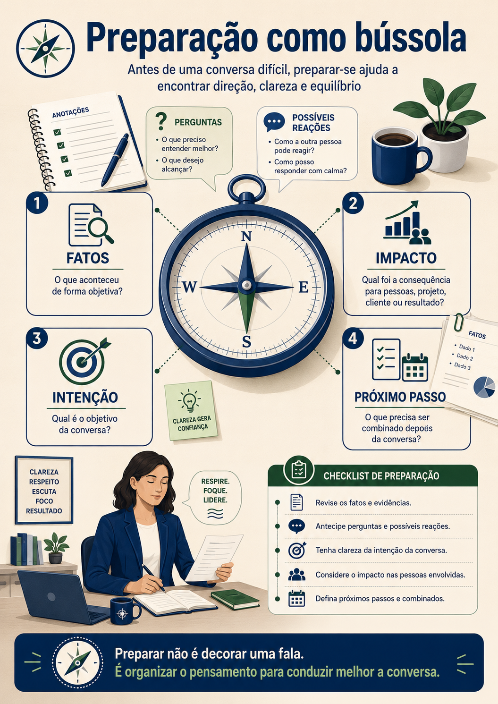

Feedback sem bronca e sem medo
Uma conversa sobre feedback estruturado, pontual, contínuo, evidências, combinados e acompanhamento.
Bom dia, pessoal. Pensa em uma pessoa que só ouve a palavra feedback quando alguma coisa deu errado. Ela já entra na conversa tensa, esperando bronca. Agora pensa em outra equipe, onde feedback aparece na rotina, também para reconhecer acertos, ajustar rota cedo e conversar sobre desenvolvimento. A palavra muda de peso porque a cultura é diferente.
Feedback é retorno. É uma conversa que ajuda a pessoa a entender como uma ação, comportamento ou entrega foi percebida e qual impacto gerou. Para que serve? Serve para orientar, corrigir, reconhecer, alinhar expectativa e desenvolver. Como usar? Com fato, evidência, escuta, combinado e acompanhamento.
Existem momentos diferentes para feedback. O feedback estruturado é aquele planejado, como uma conversa individual, ciclo de avaliação, PDI, retrospectiva ou fechamento de projeto. Ele ajuda a olhar desenvolvimento com mais calma. O feedback por necessidade acontece quando algo específico exige retorno logo, seja uma correção ou um reconhecimento.
Também existe o feedback contínuo e o pontual. Contínuo é aquele que faz parte da rotina. Pontual é aquele ligado a uma situação específica. Uma liderança madura combina os dois. Não espera seis meses para falar algo importante, mas também não vive dando retornos soltos sem acompanhamento.

Não necessariamente. Existe uma técnica conhecida como feedback sanduíche, que começa com elogio, traz um ponto de melhoria e termina com outro elogio. Ela pode ser útil em alguns contextos, mas pode ficar artificial se a pessoa percebe que o elogio é só embalagem para a crítica. O mais importante é ser respeitoso, claro e baseado em evidência.
Feedback sem evidência vira bronca. Evidência é o exemplo concreto que sustenta a conversa. Não basta dizer “você precisa se comunicar melhor”. Melhor dizer: nas duas últimas dailies, você informou que estava tudo certo, mas os bloqueios apareceram apenas no dia da entrega. Isso dificultou a ajuda do time.
A estrutura pode começar pelo evento. O que aconteceu? Quando aconteceu? Qual comportamento foi observado? Qual impacto gerou? Depois vem a escuta. A pessoa precisa ter espaço para explicar contexto. Talvez exista uma informação que a liderança não viu. Depois vem o combinado. O que será feito diferente? Como acompanhar?

Feedback bom não termina na conversa.
Ele continua no combinado e no acompanhamento.
Um exemplo positivo também precisa ser específico. Em vez de “parabéns, mandou bem”, uma fala melhor seria: na reunião com o cliente, você trouxe os dados atualizados, explicou o risco de forma simples e apresentou uma alternativa. Isso ajudou o cliente a decidir com mais segurança. Mantenha esse padrão nas próximas apresentações.
Perceba que o feedback positivo específico reforça comportamento. A pessoa entende o que deve continuar fazendo. E reconhecimento também faz parte da liderança. Se o líder só aparece para corrigir, o time associa conversa com ameaça.
Um feedback corretivo precisa separar pessoa e ação. “Você é desorganizado” ataca a pessoa. “A entrega foi enviada sem validação final” aponta a ação. A ação pode ser corrigida. O rótulo machuca e fecha a conversa.
Outro erro comum é ser vago. Falar “melhore sua postura” não orienta. Que postura? Em que situação? Com quem? O que seria uma postura melhor? A comunicação precisa transformar expectativa em comportamento observável.

Depois da pausa, vamos para casos práticos. Imagine que uma pessoa está alocada em um cliente e o cliente reclama de três pontos: demora para responder, pouca presença na ferramenta de comunicação e baixa colaboração com o time. A saída mais fácil seria tirar a pessoa do projeto. Mas uma liderança pode tentar primeiro estruturar um plano de ação, se houver espaço e tempo para isso.
A conversa poderia começar com cuidado: quero conversar sobre uma percepção recebida do cliente. Não é uma conversa confortável, mas é importante para tentarmos corrigir a rota. Foram apontados três pontos: tempo de resposta, presença nas comunicações e colaboração com o time. Quero te ouvir e depois combinarmos ações para os próximos dias.
Depois, para cada ponto, entra uma ação. Tempo de resposta: ficar atento à ferramenta do cliente e responder dentro de um prazo combinado. Presença: participar das reuniões, abrir câmera quando fizer sentido e sinalizar status. Colaboração: apoiar o time de forma mais ativa, principalmente quando houver dependência entre áreas.
O acompanhamento é essencial. Pode ser uma revisão em quinze dias e outra em trinta. Sem acompanhamento, a conversa se perde. Com acompanhamento, a pessoa entende que existe seriedade e também apoio.
Agora pense no caso de uma liderança técnica que tomou uma decisão sozinha em produção, sem revisão, sem comunicação ao time e sem plano de retorno. Talvez a intenção tenha sido boa. A pessoa quis resolver. Mas a ação gerou indisponibilidade, retrabalho e desgaste com cliente. O feedback precisa reconhecer a intenção, mas tratar o impacto.
Uma fala possível seria: eu reconheço que sua intenção foi resolver rápido e proteger a entrega. Ao mesmo tempo, a decisão foi tomada sem seguir o processo de revisão e sem comunicar o time. Isso gerou risco para o sistema e retrabalho. Para situações de alto impacto, precisamos seguir o fluxo combinado, envolver as pessoas certas e ter plano de retorno antes da ação.
Management 3.0 e Feedback Wrap, pode ampliar repertório sobre conversas de feedback com contexto, observação, sentimento, valor e sugestão.

Um ponto sensível é que feedback não deve aparecer como surpresa no fim de um ciclo. Quando a pessoa passa meses sem ouvir nada e, de repente, recebe uma avaliação ruim, a reação natural é estranhamento. Ela pode pensar: por que ninguém falou antes? Por isso, feedback contínuo é uma forma de justiça.
A gestão de expectativa vem antes do feedback. Se eu nunca disse que esperava atualização semanal, fica mais difícil cobrar isso como se fosse óbvio. Se eu nunca combinei que bloqueios deveriam ser registrados no board, talvez a pessoa tenha entendido que bastava resolver sozinha. Expectativa implícita vira feedback injusto.
Uma expectativa boa é tangível. Tangível é aquilo que dá para observar. “Seja mais protagonista” é amplo. “Sinalize riscos antes da reunião de status, proponha plano de ação e registre impedimentos no board” é mais claro. A pessoa sabe o que fazer.
Também é importante diferenciar competência técnica de comunicação. Se a pessoa sabe fazer, mas não dá visibilidade, o feedback é sobre comunicação e rotina de status. Se a pessoa não sabe fazer com qualidade, o feedback precisa vir com apoio técnico, revisão, treinamento ou acompanhamento. Cobrar comunicação não resolve falta de competência. Cobrar técnica não resolve falta de visibilidade.
O papel de pessoas seniores também apareceu como ponto importante. Mesmo sem cargo formal de liderança, quem é mais experiente influencia o ambiente. Pode orientar, revisar, criar exemplo, deixar documentação, ajudar pessoas mais novas. Isso não significa fazer o trabalho pelo outro. Significa contribuir para a evolução do time.
Feedback difícil não deve ser adiado indefinidamente. Se o problema aconteceu, espere o tempo necessário para não reagir no calor da emoção, mas não espere tanto a ponto de perder contexto. Feedback tarde demais perde precisão e vira acúmulo.
Outro erro é misturar muitos assuntos em uma única conversa. A pessoa entra para falar de comunicação, mas puxa prazo, comportamento, qualidade, reunião antiga, cliente, e-mails e mais cinco temas. O receptor sai confuso. Melhor tratar um ponto importante com clareza e combinar desdobramentos se houver outros temas.
Feedback também precisa de diálogo. Se a liderança fala por vinte minutos e não escuta, vira monólogo de correção. Pode existir uma causa que a liderança não conhece. Pode existir falta de contexto, excesso de demanda, conflito de prioridade ou dependência externa. Escutar não anula a correção. Ajuda a corrigir melhor.
Reconhecimento positivo deve ser tão específico quanto feedback corretivo. Se uma pessoa comunicou um risco cedo e isso evitou problema, diga exatamente isso. “Quando você sinalizou o risco na terça, conseguimos envolver o cliente antes e evitar surpresa. Esse é o tipo de comunicação que precisamos manter”.
O plano de ação não precisa ser um documento enorme. Pode ser simples, desde que seja claro. O que será feito? Quem acompanha? Em quanto tempo? Como saberemos que melhorou? Sem essas respostas, a conversa pode até ser boa, mas perde força na rotina.
Feedback constrói cultura quando acontece com respeito e frequência. A equipe deixa de tratar o retorno como ameaça e passa a entender como parte do trabalho. Isso exige constância da liderança.
Reflexão 29
Transforme “você precisa melhorar sua comunicação” em feedback com evidência e ação combinada.
Ver uma possibilidade de resposta
Uma possibilidade: nas duas últimas semanas, três bloqueios foram comunicados apenas no dia da entrega. Isso reduziu o tempo de reação do time. A partir desta sprint, preciso que bloqueios sejam sinalizados na daily e registrados no board no mesmo dia em que aparecerem.
Reflexão 30
Escreva um feedback positivo específico para uma pessoa que conduziu bem uma reunião com cliente.
Ver uma possibilidade de resposta
Uma possibilidade: na reunião de hoje, você começou pela conclusão, mostrou os dados principais e explicou o risco sem transferir culpa. Isso ajudou o cliente a entender o cenário e confiar no plano de ação. Mantenha esse formato nas próximas reuniões críticas.
Reflexão 31
Monte um combinado simples depois de um feedback corretivo.
Ver uma possibilidade de resposta
Uma possibilidade: durante os próximos quinze dias, você atualizará o status no canal do projeto até 17h, sinalizará bloqueios no mesmo dia e faremos um checkpoint rápido toda sexta para acompanhar a evolução.
Reflexão 32
Pense em um feedback que você teria dificuldade de dar. Qual fato sustentaria a conversa e qual cuidado de linguagem você usaria?
Ver uma possibilidade de resposta
Uma possibilidade: se o tema for interrupção em reuniões, o fato seria: na reunião de ontem, a pessoa interrompeu o cliente duas vezes antes de ele concluir. O cuidado seria falar em ambiente reservado, focando no impacto da interrupção e no combinado para a próxima reunião.
Feedback não é bronca, não é evento raro e não é formulário de avaliação. É uma prática de alinhamento. Quando tem evidência, escuta, combinado e acompanhamento, ele ajuda a pessoa a evoluir e ajuda o time a trabalhar com mais clareza.